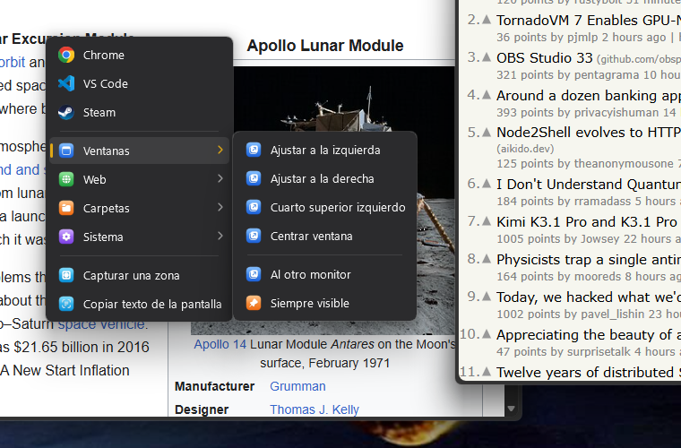
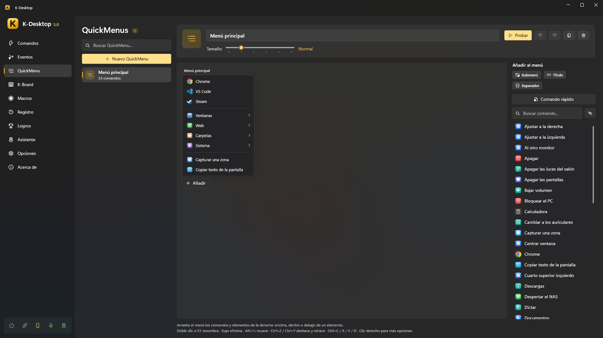

QuickMenu y lanzador
QuickMenu
Un QuickMenu es un menú con tus comandos que se abre donde está el ratón: submenús en cascada, iconos, fondo acrílico y manejo con el teclado.

- Ábrelo desde un comando con la acción Abrir QuickMenu (dale a ese comando un atajo como
Mouse 4 + Mouse 1), desde el móvil o conKDesktop.exe --menu "Nombre". - Úsalo: el clic izquierdo ejecuta y cierra, el derecho ejecuta y deja el menú abierto, y el central edita ese elemento. Con el teclado: flechas, Intro y Esc.
- Ciérralo con Esc o con un clic fuera (también en la ventana de K-Desktop). Su atajo otra vez lo cierra si el ratón está encima del menú; si no, lo vuelve a abrir donde está el ratón.
- Tamaño: de Compacto a Enorme, en cada menú.
Editarlo
En QuickMenu, arrastra comandos de la lista de la derecha al menú: encima, dentro o debajo de un elemento. Los elementos pueden ser comandos, submenús y separadores, cada uno con su nombre y su icono si quieres.

- Comando rápido crea un comando a partir de un programa, un archivo, una carpeta o una web y lo añade de una vez; luego puedes afinarlo en Comandos.
- Doble clic o F2 cambia el nombre, Supr lo quita, Alt+↑↓ lo mueve, Ctrl+Z / Ctrl+Y deshacen y rehacen, Ctrl+C / X / V / D copian, cortan, pegan y duplican; con el botón derecho hay más.
- Probar abre el menú tal como se verá, y el botón del rayo crea un comando que lo abre (para darle un atajo o una frase de voz).
- El botón junto a Añadir al menú oculta ese panel para tener más sitio. La rueda del ratón mueve el menú hacia los lados; si también es más alto que el espacio, la rueda lo mueve arriba y abajo, y Ctrl + rueda hacia los lados.
Menú de IA
Crear menú de IA (debajo de Nuevo QuickMenu) crea el QuickMenu «IA» con siete comandos para lo que tengas
seleccionado: Traducir y Corregir pegan la respuesta en lugar de la selección; Resumir, Explicar y
Responder la enseñan en una hoja. Cada uno es una acción Asistente: preguntar con {seleccion} que contesta
K-Desktop. Leer en voz alta es una Asistente: decir con {seleccion}: K-Desktop lo lee con su voz. Traducir la pantalla no necesita
selección: eliges una zona con el ratón, Copiar texto de la pantalla lee su texto y Asistente: preguntar lo traduce
en una hoja (con {resultado}). En cada comando puedes cambiar el texto, la respuesta o elegir otro asistente. También crea el comando
«Menú de IA», que lo abre: ponle un atajo. Necesita el módulo Asistente encendido y un cerebro.
Lanzador
El lanzador es una caja de búsqueda con su propio atajo (Opciones → Lanzador). Escribe parte de un nombre —valen las iniciales o letras sueltas: «cmfy» encuentra ComfyUI—, elige con ↑ ↓ y pulsa Intro. Esc, o el mismo atajo, lo cierra.

Encuentra:
Tus comandos, también los ocultos si quieres.
Los programas del menú Inicio, con las aplicaciones de la Tienda.
Cuentas: escribe
12*3.5e Intro copia el resultado.
Lo que has copiado (Historial del portapapeles): lo del historial que tenga lo escrito; Intro lo pega donde estabas.
Archivos y carpetas: los que se llaman como lo escrito, del índice de búsqueda de Windows y de tus carpetas (Escritorio, Documentos, Descargas…). Salen un momento después, al final. Empieza por
?para buscar solo archivos (?factura luz). Intro lo abre y Ctrl+Intro abre la carpeta donde está.La web: cuando no hay nada mejor, ofrece buscarlo en internet (con el buscador que elijas).
Con Los más usados primero, lo que más usas sale antes, incluso antes de escribir nada.